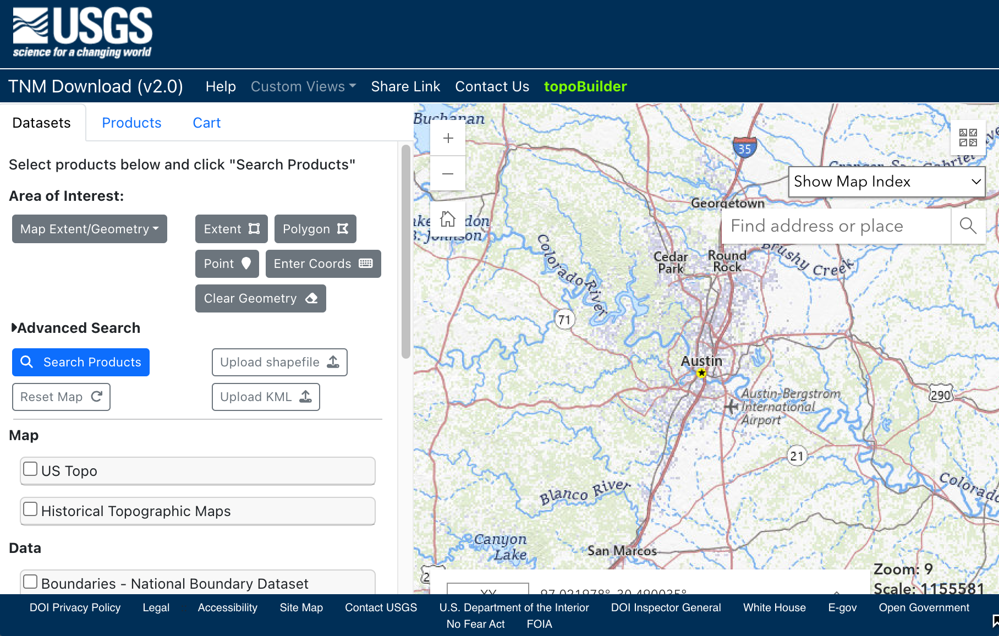
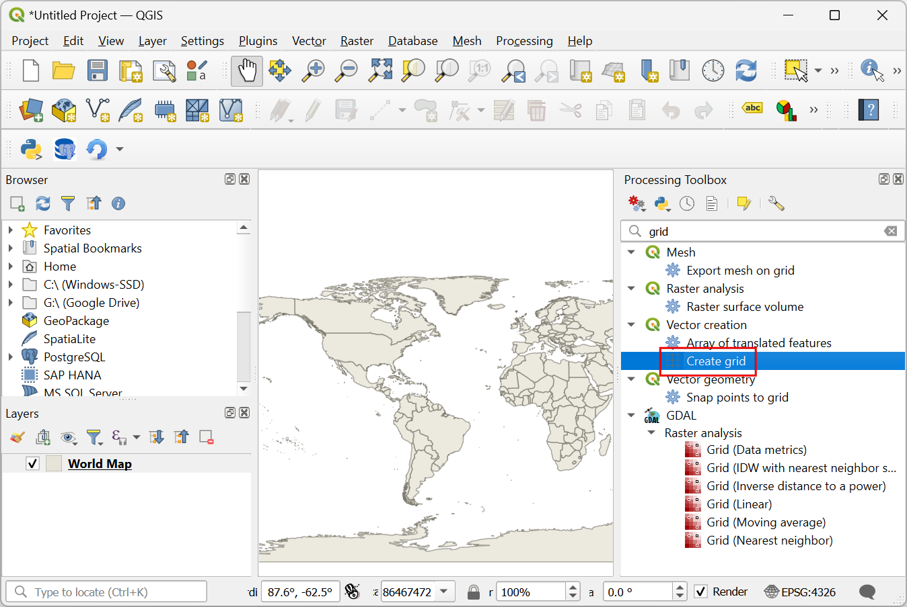
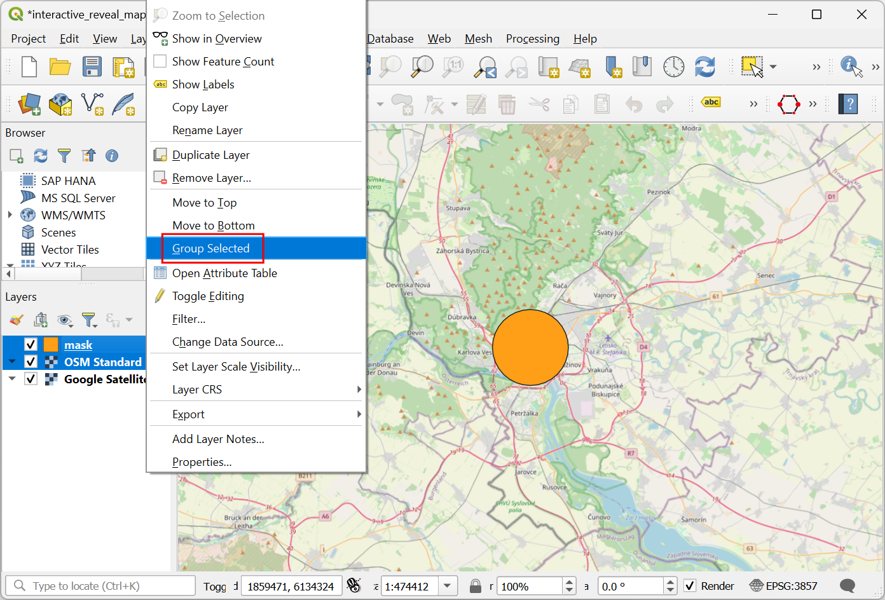
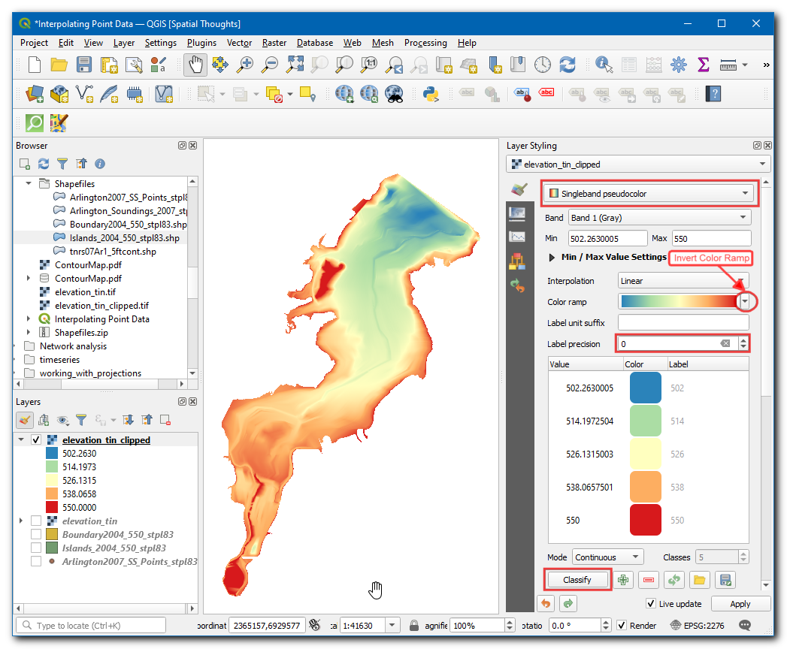

공간 조회 실행(QGIS3)¶
공간 쿼리는 여러 유형의 GIS 분석의 핵심입니다. 공간 쿼리를 사용하면 다른 레이어의 피처와 공간 관계 (교차, 포함, 터치 등)로 레이어의 피처를 선택할 수 있습니다. QGIS에서이 기능은 위치 별 선택 및 위치 별 추출 도구를 통해 사용할 수 있습니다.
작업 개요¶
우리는 호주 멜버른시의 2 개의 데이터 계층으로 작업 할 것입니다. 도시의 모든 술집과 바에 대한 데이터 계층과 모든 지하철 역의 위치를 고려하면 지하철 역에서 500m 이내에있는 모든 술집과 술집을 찾고 싶습니다.
기타 스킬¶
벡터 데이터에 적절한 투영법을 선택하고 재 투영합니다.
버퍼를 생성합니다.
geopackage (.gpkg)데이터 형식으로 작업
데이터 획득¶
City of Melbourne의 Open Data Platform은 도시의 관련 많은 GIS 지원 데이터 세트를 제공합니다.
메트로 기차 멜버른이 제공하는 접근성 정보가있는 메트로 기차역을 다운로드하십시오. 데이터를 원본 형식으로 내 보냅니다.
멜버른시의 토지 사용 및 고용 인구 조사 (CLUE)에서 제공하는 후원자 용량 데이터가 포함 된 바와 술집을 다운로드하십시오. 데이터를 CSV로 내 보냅니다.

편의 상 아래 링크에서 데이터셋 복사본을 직접 다운로드할 수 있습니다.
metro_stations_accessbility.zip
Bars_and_pubs__with_patron_capacity
데이터 출처[CITYOFMELBOURNE]
과정¶
QGIS Browser에서 metro_stations_accessbility.zip 파일을 찾아 확장하십시오. metro_stations_accessbility.shp 파일을 선택하고 캔버스로 끕니다. 새 레이어 metro_stations_accessbility가 레이어 패널에 로드됩니다.

바와 술집의 데이터 레이어는 CSV 형식입니다. QGIS에로드하려면 레이어 ‣ 레이어 추가 ‣ 구분 된 텍스트 레이어 추가 …로 이동하십시오 (CSV 파일 가져 오기에 대한 자세한 내용은 스포레드시트 및 CSV 파일 불러 오기 (QGIS3) 참조).

데이터 소스 관리자에서 | 구분 된 텍스트 대화 상자에서 다운로드 한 Bars_and_pubs__with_patron_capacity.csv 파일을 찾아 파일 이름으로 선택하십시오. X 필드와 Y 필드 열은 각각 x 좌표와 y 좌표로 자동 선택되어야합니다. 추가를 클릭하십시오.

You will see a new
Bars_and_pubs__with_patron_capacitylayer added to the Layers panel. Both of the input layers are in the Geograhpic Coordinate Reference System (CRS)EPSG:4326 WGS84. For performing spatial analysis, it is recommended to use a Projected Coordinate Reference System (CRS). So we will now re-project both the layers to an appropriate regional CRS that minimizes distortions and allows us to work in units of distance such as meters instead of degrees. Go to .

Vector general ‣ Reproject layer 도구를 검색하고 찾습니다. 시작하려면 두 번 클릭하십시오.

입력 레이어로 Bars_and_pubs__with_patron_capacity를 선택하십시오. 대상 CRS 옆에있는 CRS 선택 버튼을 클릭하십시오.

분석 할 투영 좌표계를 선택할 때 가장 먼저 살펴야 할 것은 관심 영역에 대한 지역 CRS입니다. 호주의 경우 MGA (Map Grid of Australia) 2020은 로컬 및 지역 매핑에 사용되는 UTM 기반 그리드 시스템입니다. Melbourne은 UTM Zone 55에 해당하므로 GDA 2020 / MGA zone 55 EPSG : 7855` CRS를 선택할 수 있습니다.

참고
작업중인 지역에 대한 로컬 CRS가 확실하지 않으면 WGS84 데이텀을 기반으로 UTM 영역에 대한 CRS를 선택하는 것이 안전한 선택입니다. 세계의 UTM 그리드 영역을 사용하여 해당 지역의 UTM 영역 번호를 찾을 수 있습니다.
그런 다음 Reprojected 옆에있는 … 버튼을 클릭하고 GeoPackage에 저장을 선택하십시오. Geopackage는 권장되는 개방 데이터 형식 공간 데이터이며 QGIS3의 기본 데이터 교환 형식입니다. 단일 GeoPackage .gpkg 파일에는 여러 벡터 및 래스터 레이어가 포함될 수 있습니다.

geopackage를 spatialquery로 이름을 지정하고 저장을 클릭하십시오.

레이어 이름을 묻는 메시지가 표시되면 bars_and_pubs를 입력하고 확인을 클릭하십시오. 레이어를 다시 투영하려면 실행을 클릭하십시오.

창이 로그 탭으로 전환되고 알고리즘이 실행되고 새 출력 레이어 bar_and_pubs가 생성됩니다.

이제 metro_stations_accessbility 레이어를 다시 투영합니다. Reproject 레이어 창의 Paramters 탭으로 다시 전환하십시오. 입력 레이어로 metro_stations_accessbility를 선택하십시오. 동일한 대상 CRS를 유지하십시오. 그런 다음 Reprojected 옆에있는 … 버튼을 클릭하고 GeoPackage에 저장을 선택하십시오. 동일한 출력 파일 공간 쿼리를 선택하십시오 (단일 지오 패키지 파일에 여러 계층이 포함될 수 있으므로 새 계층을 동일한 지오 패키지 파일에 저장함). 레이어 이름으로 metro_stations를 입력하십시오. 실행을 클릭하십시오.

메인 QGIS 창으로 돌아 가면 레이어 패널에로드 된 2 개의 새로운 레이어 (bar_and_pubs 및 metro_stations)가 나타납니다. 원본 레이어의 가시성을 끌 수 있습니다. 이제 공간 쿼리를 수행 할 준비가되었습니다. 우리는 지하철 역에서 500m 이내에 바와 술집을 선택하는 데 관심이 있기 때문에 첫 번째 단계는 지하철 역 주변에 검색 영역을 나타내는 버퍼를 만드는 것입니다. 처리 도구 상자에서 벡터 지오메트리 ‣ 버퍼 도구를 찾아서 두 번 클릭하여 시작하십시오.

In the Buffer dialog, select
metro_stationsas the Input layer. Set500meters as the Distance. Save the output to the samespatialquerygeopackage and entermetro_stations_buffersas the Layer name. Click Run.

레이어 패널에 새로운 metro_stations_buffers 레이어가로드 된 것을 볼 수 있습니다. 이제 우리는 bars_and_pubs 레이어의 어떤 지점이 metro_stations_buffers 레이어의 다각형 내에 속하는지 알아낼 수 있습니다. Processing Toolbox에서 Vector selection ‣ Extract by Location 도구를 찾아 두 번 클릭하여 시작하십시오.

참고
위치 별 추출은 공간 쿼리에서 일치하는 요소을 가진 새 레이어를 만듭니다. 요소 만 선택하려면 위치 별 선택 도구를 사용하십시오.
위치 별 추출 대화 상자에서 추출 기능으로 bars_and_pubs를 선택하십시오. 지오메트리 술어로 교차를 확인하십시오. 기능과 비교하여 metro_stations_buffers를로 설정하십시오. 선택한 레이어로 출력을 공간 쿼리 지오 패키지에 저장하십시오. 실행을 클릭하십시오.

처리가 완료되면 선택한 레이어가 레이어 패널에 추가 된 것을 볼 수 있습니다. 이 레이어에는 버퍼 폴리곤 내에있는 bars_and_pubs의 점만 포함됩니다.

우리의 분석이 완료되었습니다. 버퍼 다각형이 타원형으로 보일 수 있습니다. 이는 프로젝트 CRS가 여전히 EPSG : 4326 WGS84로 설정되어 있기 때문입니다. 결과를 더 잘 시각화하기 위해 Project ‣ Properties ‣ CRS로 이동하여 분석에 사용한 GDA 2020 / MGA zone 55 EPSG : 7855를 선택할 수 있습니다. 이 CRS로 설정되면 버퍼가 올바른 모양으로 나타납니다.
